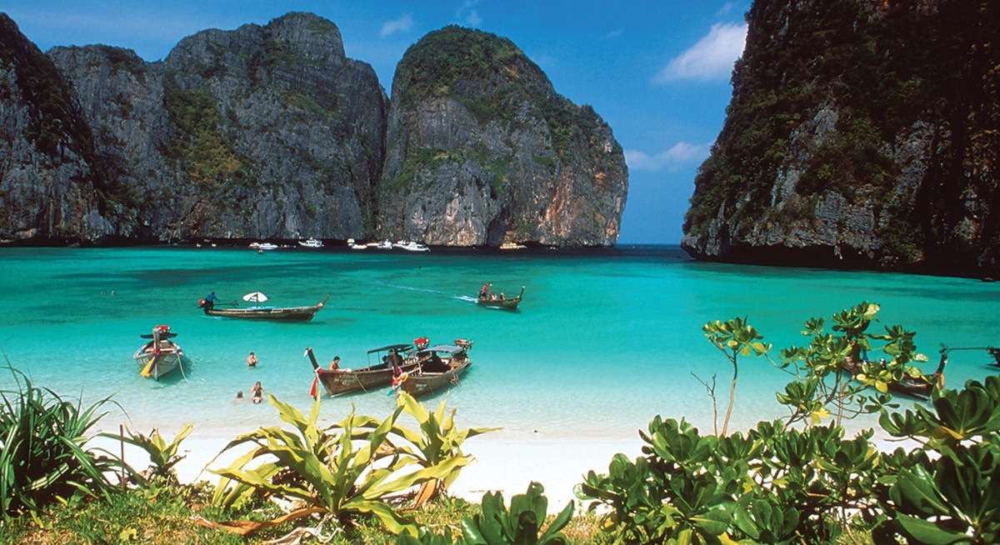
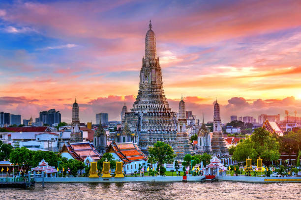
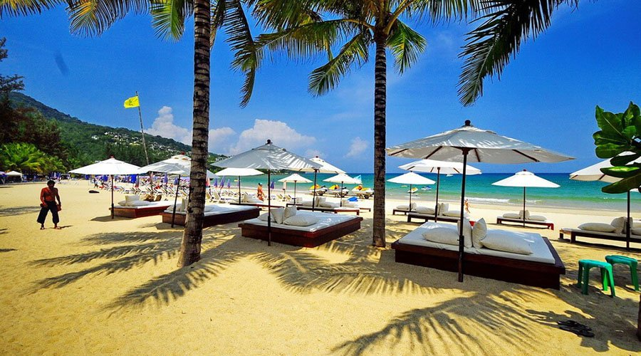
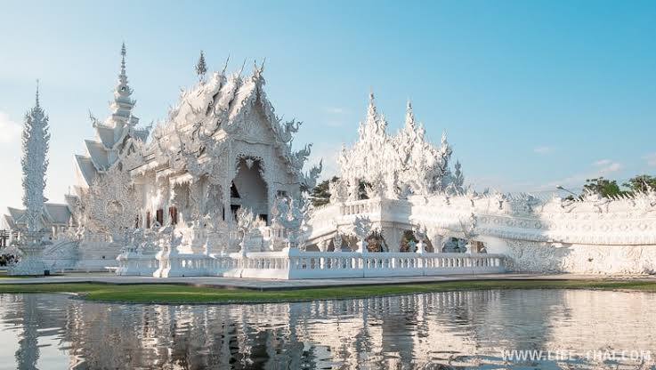
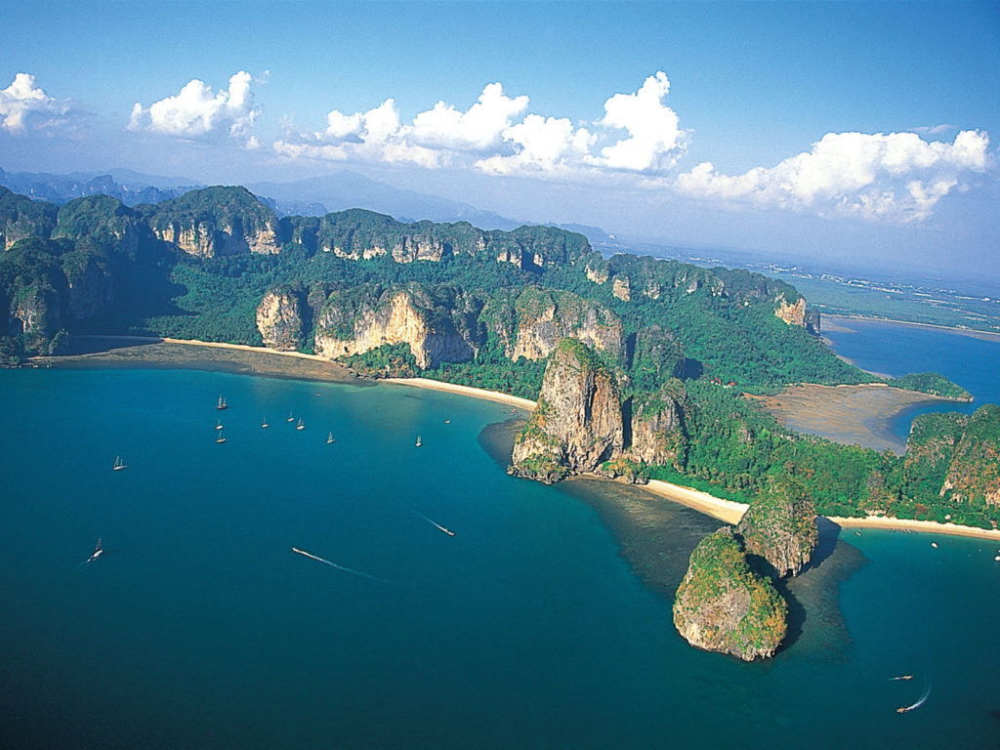
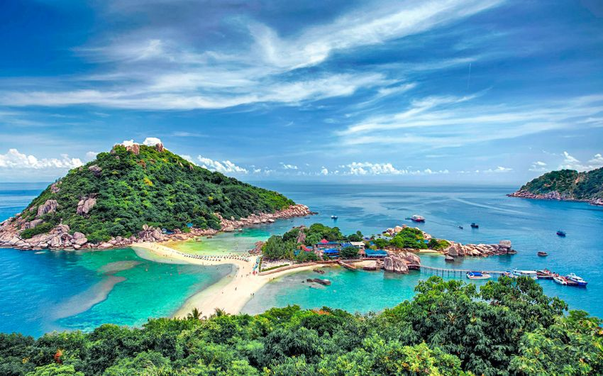
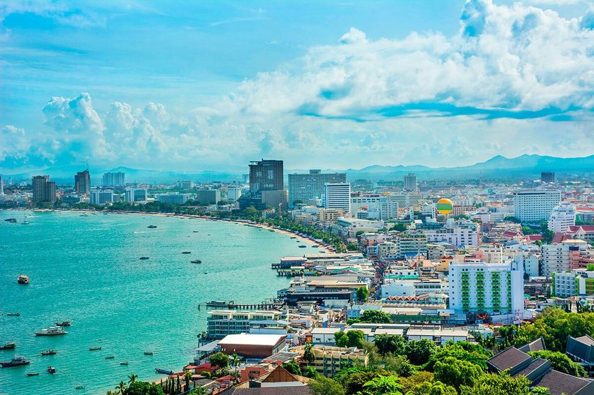

Travel Diary |
Главная | Страны | Советы | Места |

| Столица | Язык | Валюта | Лучшее время |
| Бангкок | Тайский | THB (Бат) | Ноябрь - Март |
| Таиланд — тропическая страна в Юго-Восточной Азии, известная своими пляжами, тёплым морем, красивыми островами, буддийскими храмами, уличной едой и насыщенной культурой. |
|
 Бангкок |
 Пхукет |
 Чиангмай |
 Краби |
 Самуи |
 Паттайя |
|---|---|---|---|---|---|
| Столица и сердце страны | Пляжи и ночная жизнь | Горы, храмы, спокойствие | Пляжи, скалы и острова | Тропики и релакс | Развлечения и ночная жизнь |